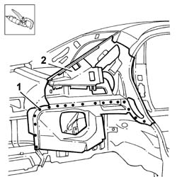
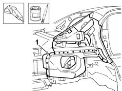
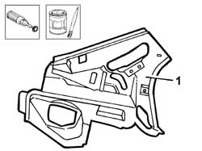
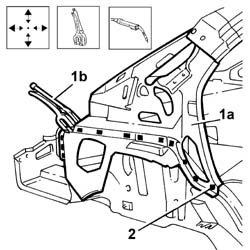

7210B30 REAR PILLAR
- Path
- Procedures > 72 panels and frames > 7210 REMOVING REFITTING > 7210B STRUCTURAL ELEMENTS (CENTRE AND REAR section) > 7210B30 REAR PILLAR
- Kind
- repair procedure (removal / refitting; the operation number is the code)
- Applies to
- all engines; all production periods
- Interactive page
- https://sloeber94.github.io/elrnDB-lThss/en/#/501041
Applies to: all engines; all production periods
Applies to: all engines; all production periods
 Removing
Removing
 Refitting
Refitting- Check whether the components connected are distorted through the bodyshell alignment measurements using suitable test equipment (test benches, templates or jigs).
- Carry out any bodyshell straightening operations before cutting the component.
1. Remove the spot welds shown using a chamfering machine and a drill.
2. Detach the rear pillar and remove it.

Applies to: all engines; all production periods
Refitting
Removing1. Straighten the edges of the panel and grind the areas of the bodyshell affected and apply electro-galvanizing paint.

Applies to: all engines; all production periods
1. Remove the anti-corrosion treatment from the entire perimeter of the replacement panel using a rotary brush and apply electro-galvanizing paint to the edges in contact with the vehicle bodyshell.

Applies to: all engines; all production periods
1. Position the rear pillar replacement part (1a) and secure it using self-locking clamps (1b).
- Check that the rear pillar is correctly positioned.
2. Weld at the points shown in the diagram.

Applies to: all engines; all production periods
- Check that the welded components are correctly positioned.
- Level the spot welds using a disc grinder.
- Clean the inner and outer parts using a rotary brush.
- Apply electro-galvanizing paint to the ground parts.